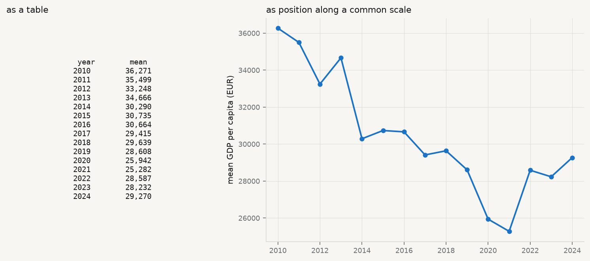
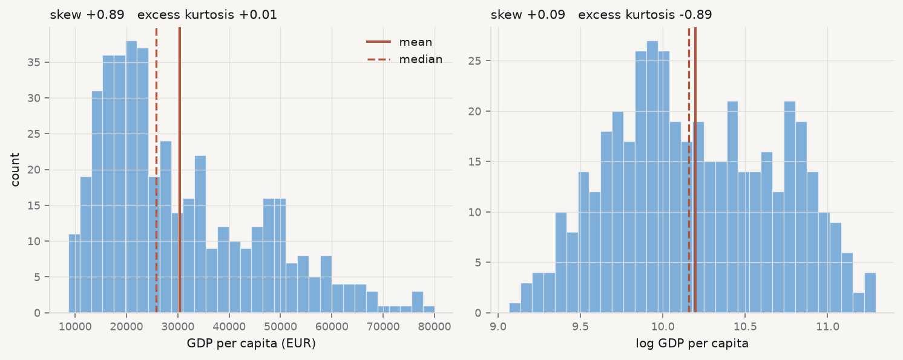
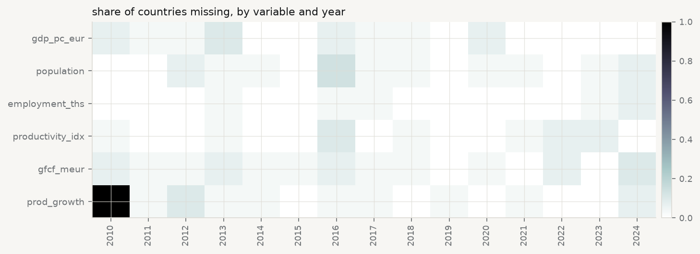

The instinct on receiving a dataset is to fit something to it. Resist it for an hour. Almost every analysis that goes wrong went wrong before the model was fitted, in a decision taken without looking — a variable whose units were not what they seemed, a distribution with two modes averaged into one, a year with no observations at all.
John Tukey made the case that this preliminary work is not preliminary (Tukey 1962). Data analysis, he argued, is a science rather than a branch of mathematics: it proceeds by examination and conjecture, it tolerates approximate answers to the right question over exact answers to the wrong one, and its most important step — deciding what question the data can support — has no formula. Confirmatory statistics can only test a hypothesis you already have. Where the hypothesis comes from is exploratory work, and pretending otherwise is how a dataset ends up answering a question nobody asked.
Florence Nightingale · 1820–1910
Made the case with a chart rather than a table, and changed policy with it.
Henry Hering, circa 1860. Public domain, via Wikimedia Commons.
From the archive · Nightingale, 1858
Florence Nightingale returned from the Crimea with an argument and a table. The argument was that most of the army’s dead had been killed by preventable disease rather than by the enemy, and that sanitary reform would therefore save more soldiers than anything the surgeons could do. The table was ignored.
So she drew it. Her polar-area diagram — the “coxcomb” — put each month around a circle and the deaths in each as an area, split by cause, and the blue wedge of preventable disease overwhelmed everything else on sight. The chart was circulated to a royal commission, to ministers, to the Queen. The reforms followed.
The lesson is not that charts are prettier than tables. It is that a table asks the reader to hold twenty-four numbers in their head and perform the comparison themselves, while a chart performs the comparison for them. Human visual judgement is very good at some comparisons — position along a common scale, most of all — and poor at others, and that ordering has since been measured rather than assumed (Cleveland and McGill 1984). Nightingale had no such research. She had the intuition, and a commission that needed convincing.
Show the code
import sys, warningssys.path.insert(0, "../slides"); sys.path.insert(0, "..")warnings.filterwarnings("ignore")from plotstyle import setup, CLplt = setup()import numpy as np, pandas as pd, qmibcore = qmib.load("core")by_year = core.groupby("time")["gdp_pc_eur"].mean().dropna()fig, (ax_t, ax_c) = plt.subplots(1, 2, figsize=(9.4, 4.2), gridspec_kw={"width_ratios": [1, 1.5]})ax_t.axis("off")rows = [f"{int(y)}{v:>10,.0f}"for y, v in by_year.items()]ax_t.text(0.5, 0.5, "year mean\n"+"\n".join(rows), family="monospace", fontsize=8.5, va="center", ha="center", transform=ax_t.transAxes, color=CL.ink)ax_t.set_title("as a table", fontsize=10, loc="left")ax_c.plot(by_year.index, by_year.values, marker="o", ms=4.5, lw=1.8, color=CL.accent)ax_c.set_ylabel("mean GDP per capita (EUR)")ax_c.set_title("as position along a common scale", fontsize=10, loc="left")ax_c.margins(x=0.04)fig.tight_layout()

Figure 2.1: The same fourteen numbers, twice. Average GDP per capita by year in the course fixtures, as a table of figures and as position along a common scale. Nothing has been added on the right; the comparison has simply been done for you.
2.2 Look at it first, literally
Before any statistic, look at the thing. R users have View(); Python has no single equivalent, because a notebook renders the last expression, a script prints nothing, and print(df) truncates to the terminal width. qmib.view() gives the same answer in all three: the shape, every column with its type and how much of it is missing, and the first rows — scrollable here, printed in a terminal.
Show the code
qmib.view(core)
core: 450 rows x 11 columns (2.7% missing overall)
geo
time
gdp_pc_eur
population
employment_ths
productivity_idx
gfcf_meur
prod_growth
falling_behind
falling_behind_next
flag
0
AT
2010
38193.955
11495826.000
5265.073
103.349
95.222
—
0
0
1
AT
2011
40644.251
12299989.000
5830.411
106.119
108.808
2.681
0
0
2
AT
2012
33035.780
12294814.000
5746.553
108.084
87.626
—
0
0
3
AT
2013
33595.312
11768544.000
5146.733
104.292
85.048
-3.508
0
0
4
AT
2014
37265.749
11949079.000
5218.544
104.665
94.471
0.358
0
0
5
AT
2015
23723.422
11555339.000
5094.443
105.127
57.017
0.441
0
1
6
AT
2016
29535.812
13053057.000
5878.256
100.782
80.190
-4.133
1
0
7
AT
2017
—
11379421.000
5042.292
108.135
56.972
7.296
0
1
8
AT
2018
29754.420
12290876.000
5566.416
—
76.404
-3.278
1
0
9
AT
2019
32816.404
12562395.000
5648.978
108.299
86.547
3.546
0
0
10
AT
2020
28031.533
10963179.000
4655.423
104.708
64.633
-3.316
0
0
11
AT
2021
22314.188
11769447.000
5044.122
106.423
54.926
1.638
0
0
columns, types and missingness
dtype
missing
distinct
geo
str
0.0%
30
time
int64
0.0%
15
gdp_pc_eur
float64
2.9%
437
population
float64
3.3%
435
employment_ths
float64
1.3%
444
productivity_idx
float64
2.4%
434
gfcf_meur
float64
4.0%
432
prod_growth
float64
9.3%
399
falling_behind
Int64
0.0%
2
falling_behind_next
Int64
6.7%
2
flag
str
0.0%
5
Two things in that table are worth noticing before going further, and both are invisible in any summary statistic. Seven of the eleven columns have missing values, and prod_growth is missing far more often than the rest — a pattern this chapter returns to. And flag has five distinct values in a column that looks like it should be empty, which is the observation-status code the source uses to mark provisional and estimated figures.
2.3 Centre: three answers, three questions
The first question about a variable is where it sits. There are three standard answers and they are not interchangeable — each is the solution to a different problem.
Mean — \(\bar x = \frac1n \sum_i x_i\). The value minimising the sum of squared deviations, and the balance point of the distribution. It uses every observation, which is its strength and its weakness: one extreme value moves it without limit.
Median — the middle order statistic, minimising the sum of absolute deviations. It ignores how far away the extremes are, only that they are on one side, so it is unmoved by an outlier of any magnitude. Its breakdown point is 50%: half the data must be corrupted before it fails.
Trimmed mean — the mean of the data after discarding the most extreme \(\alpha\) from each tail. A deliberate compromise: more efficient than the median when the distribution is nearly normal, more robust than the mean when it is not.
Which to report is a question about the decision the number will serve. If you are budgeting a total — total tax revenue, total emissions — the mean is the right summary, because the total is the mean times the count and the extremes genuinely contribute. If you are describing a typical case — what a typical country looks like — the median is right, because the question is about the middle and not about the total.
Run it: the three centres, and what separates them
from scipy import statsy = core["gdp_pc_eur"].dropna()mean, median = y.mean(), y.median()trimmed = stats.trim_mean(y, 0.10)print(f"n = {len(y)} (of {len(core)} rows; {core['gdp_pc_eur'].isna().sum()} missing)")print(f" mean {mean:>10,.0f}")print(f" 10% trimmed {trimmed:>10,.0f}")print(f" median {median:>10,.0f}")print(f"\nmean - median = {mean - median:,.0f}, which is {(mean/median -1):.1%} of the median.")print("A mean above the median is the signature of a right tail.")
n = 437 (of 450 rows; 13 missing)
mean 30,373
10% trimmed 28,723
median 25,733
mean - median = 4,639, which is 18.0% of the median.
A mean above the median is the signature of a right tail.
The mean sits well above the median here, and the trimmed mean sits between them — the ordering that a right-skewed variable always produces. Reporting the mean alone would describe a country that does not exist: richer than most of the sample, because a few very rich country-years are pulling it up.
2.4 Spread, and the \(n-1\) that everyone asks about
Sample variance — \[
s^2 \;=\; \frac{1}{n-1}\sum_i (x_i - \bar x)^2 .
\] The divisor is \(n-1\), not \(n\), because the deviations are taken from \(\bar x\) rather than from the true mean \(\mu\). \(\bar x\) is the value that minimises that sum of squares, so deviations from it are systematically too small, and dividing by \(n\) would return an estimate that is too low on average. One degree of freedom was spent estimating the centre; \(n-1\) remain.
That is the honest one-sentence answer, and it is worth being able to demonstrate rather than assert. The cell below does it by simulation: draw many samples from a distribution whose variance is known, and compare the average of the two estimators against the truth.
Run it: show that dividing by n is biased
rng = np.random.default_rng(60033)true_var, n, reps =4.0, 5, 200_000draws = rng.normal(0, np.sqrt(true_var), size=(reps, n))dev2 = ((draws - draws.mean(axis=1, keepdims=True)) **2).sum(axis=1)print(f"true variance {true_var:.4f}")print(f"average of sum/(n) (biased) {(dev2 / n).mean():.4f}")print(f"average of sum/(n-1) (unbiased) {(dev2 / (n -1)).mean():.4f}")print(f"\nthe biased estimator is low by a factor of about {(n-1)/n:.2f} = (n-1)/n")
true variance 4.0000
average of sum/(n) (biased) 3.2017
average of sum/(n-1) (unbiased) 4.0021
the biased estimator is low by a factor of about 0.80 = (n-1)/n
With \(n = 5\) the understatement is 20%, which is not a rounding error. It shrinks as \(n\) grows, which is why the choice rarely matters in a large sample and matters a great deal in a small one.
The variance is in squared units — squared euros, here, which is not a quantity anyone has an intuition for — so it is normally reported as its square root, the standard deviation. The alternative measure of spread makes no distributional assumption at all:
Interquartile range — \(\mathrm{IQR} = Q_3 - Q_1\), the width of the middle half of the data. Like the median it is unaffected by the size of the extremes, and like the median it is the right choice when the distribution is skewed or heavy-tailed.
2.5 Shape, and a rule that passes when it should not
Two standardised moments describe departure from the normal shape.
Skewness — the third standardised moment, \(g_1 = \frac1n \sum_i \left(\frac{x_i - \bar x}{s}\right)^3\). Zero for any symmetric distribution; positive when the right tail is longer. The cube preserves sign, so observations far above the mean contribute positively and those far below negatively, and they do not cancel unless the distribution is symmetric.
Excess kurtosis — the fourth standardised moment minus 3, so that a normal distribution scores zero. Positive means heavier tails than normal — more extreme observations than a normal would produce. It is not a measure of “peakedness”, a description that survives in textbooks and is wrong.
The conventional threshold is that \(|g_1| > 2\) or \(|g_2| > 2\) indicates a serious departure. Now watch what happens when the same variable is tested by the empirical rule instead.
Run it: shape statistics, and the empirical rule
skew = stats.skew(y, bias=False)kurt = stats.kurtosis(y, bias=False) # already excesssd = y.std(ddof=1)print(f"skewness {skew:+.3f} (threshold ±2)")print(f"excess kurtosis {kurt:+.3f} (threshold ±2)")print(f"\nempirical rule — the fraction of observations within k standard deviations:")for k, expected in ((1, 0.68), (2, 0.95), (3, 0.997)): got = ((y - y.mean()).abs() < k * sd).mean()print(f" within {k} sd {got:6.1%} normal says {expected:.1%}")
skewness +0.887 (threshold ±2)
excess kurtosis +0.014 (threshold ±2)
empirical rule — the fraction of observations within k standard deviations:
within 1 sd 68.0% normal says 68.0%
within 2 sd 95.7% normal says 95.0%
within 3 sd 99.3% normal says 99.7%
Read that carefully, because it is the point of the section. The variable is visibly right-skewed — the mean exceeds the median by a wide margin, and the skewness statistic agrees. Yet the empirical rule is satisfied almost exactly: 68% within one standard deviation, close to 95% within two.
The empirical rule is a weak check. It constrains the bulk of the distribution, where skew has little effect, and says almost nothing about the tails, which is where the departure lives. Passing it is not evidence of normality. Its precondition is the thing being tested, which makes it useless as a test and merely reassuring as a description — a distinction worth carrying into every diagnostic in this book.
2.6 Transformation, and what it costs
The standard response to a right-skewed positive variable is to take logarithms. It works, in the sense that the skew largely disappears. It is worth watching what else changes.
Show the code
ly = np.log(y)fig, axes = plt.subplots(1, 2, figsize=(9.4, 3.8))for ax, series, name in ((axes[0], y, "GDP per capita (EUR)"), (axes[1], ly, "log GDP per capita")): ax.hist(series, bins=32, color=CL.accent, alpha=0.55, edgecolor="white", linewidth=0.6) ax.axvline(series.mean(), color=CL.warn, lw=1.8, label="mean") ax.axvline(series.median(), color=CL.warn, lw=1.5, ls="--", label="median") ax.set_xlabel(name) ax.set_title(f"skew {stats.skew(series, bias=False):+.2f} "f"excess kurtosis {stats.kurtosis(series, bias=False):+.2f}", fontsize=9.5, loc="left")axes[0].set_ylabel("count")axes[0].legend(frameon=False, fontsize=8.5)fig.tight_layout()

Figure 2.2: GDP per capita in the course fixtures, raw and log-transformed, with mean (solid) and median (dashed). Taking logs removes most of the skew; look at what it does to the tails.
The skew falls almost to zero, as advertised. The excess kurtosis moves the other way, from very slightly positive to clearly negative — the transformed variable has lighter tails than a normal distribution, not merely lighter than before. Taking logs did not make the variable normal. It made it a different non-normal shape.
That is the general situation, and it is why “take logs to fix normality” is bad advice stated that way. The good reasons to take logs are substantive: because the effect you believe in is proportional rather than additive, because the variable is a ratio or a price, or because the relationship you are about to model is multiplicative. If those hold, the transformation is right whatever it does to the shape statistics. If they do not, you have changed the quantity you are modelling in order to improve a diagnostic, which is the tail wagging the dog.
2.7 What is missing, and why
A summary of the observed values says nothing about the values that are absent, and absence is rarely accidental.
MCAR, MAR, MNAR — Rubin’s taxonomy (Rubin 1976). Missing completely at random: the probability of being missing is unrelated to anything, observed or not — the only case where dropping incomplete rows is harmless. Missing at random: the probability depends on observed variables, so it can be modelled. Missing not at random: it depends on the unobserved value itself — the highest incomes are the ones not reported — which cannot be diagnosed from the data alone, because the evidence you would need is precisely what is missing.
Show the code
cols = ["gdp_pc_eur", "population", "employment_ths","productivity_idx", "gfcf_meur", "prod_growth"]grid = (core.pivot_table(index="geo", columns="time", values=cols, aggfunc="first", dropna=False) .isna())fig, ax = plt.subplots(figsize=(9.2, 3.4))share = pd.DataFrame({c: grid[c].mean(axis=0) for c in cols}).Tim = ax.imshow(share.values, aspect="auto", cmap="bone_r", vmin=0, vmax=1)ax.set_yticks(range(len(cols))); ax.set_yticklabels(cols, fontsize=8.5)ax.set_xticks(range(len(share.columns)))ax.set_xticklabels([int(t) for t in share.columns], fontsize=8, rotation=90)ax.set_title("share of countries missing, by variable and year", fontsize=10, loc="left")fig.colorbar(im, ax=ax, fraction=0.025, pad=0.01)fig.tight_layout()

Figure 2.3: Missingness in the course fixtures. Each cell is one country-year; dark means absent. The pattern is not noise — read the first column.
Run it: is the missingness random?
miss = core["prod_growth"].isna()print(f"prod_growth missing: {miss.sum()} of {len(core)} ({miss.mean():.1%})")print(f" in 2010 alone: {miss[core.time ==2010].mean():.0%}")obs = core.dropna(subset=["gdp_pc_eur"])present = obs.loc[~obs["prod_growth"].isna(), "gdp_pc_eur"].mean()absent = obs.loc[obs["prod_growth"].isna(), "gdp_pc_eur"].mean()print(f"\nmean GDP per capita where prod_growth is present: {present:>9,.0f}")print(f" where it is missing: {absent:>9,.0f}")print(f" difference: {absent - present:+,.0f} ({(absent/present -1):+.1%})")print("\nMissingness that depends on an observed variable is MAR, not MCAR.")
prod_growth missing: 42 of 450 (9.3%)
in 2010 alone: 100%
mean GDP per capita where prod_growth is present: 30,023
where it is missing: 34,044
difference: +4,021 (+13.4%)
Missingness that depends on an observed variable is MAR, not MCAR.
Two findings, of different kinds. The first is structural and completely explicable: prod_growth is missing for every country in 2010 because it is a year-on-year growth rate and 2010 is the first year in the panel. There is no 2009 to difference against. That is not missing data in any interesting sense — it is a variable that does not exist for that year, and treating it as an imputation problem would be a category error.
The second is not structural. Where prod_growth is absent, the average GDP per capita differs materially from where it is present. Missingness is associated with an observed variable, which puts it in Rubin’s missing at random category and rules out the convenient assumption. Dropping incomplete rows — which every regression in this book does by default — is therefore not neutral: it changes the composition of the sample toward the country-years that report. Whether that matters depends on the question, and the only wrong move is not to check.
2.8 The first model, as a right-angled triangle
Now fit something. The simplest model relates one variable to one other,
and the least-squares solution in this case has a closed form worth memorising, because it says what a slope is:
\[
\hat\beta_1 \;=\; \frac{\operatorname{Cov}(x, y)}{\operatorname{Var}(x)},
\qquad
\hat\beta_0 \;=\; \bar y - \hat\beta_1 \bar x .
\]
The slope is covariation divided by variation in the predictor: how much \(x\) and \(y\) move together, per unit of \(x\) moving at all. The intercept exists only to make the line pass through \((\bar x, \bar y)\), which it always does.
The geometry is where the understanding is. Think of the \(n\) observations as a single vector in \(n\)-dimensional space. Centre it — work with \(y - \bar y\) — and fitting a line is projecting that vector onto the direction of \(x - \bar x\). The fitted values are the shadow; the residuals are what the shadow misses; and because a projection is orthogonal, the residual is at right angles to the fitted vector. A right angle means Pythagoras:
\[
\underbrace{\lVert y - \bar y\rVert^2}_{\text{TSS}}
\;=\;
\underbrace{\lVert \hat y - \bar y\rVert^2}_{\text{ESS}}
\;+\;
\underbrace{\lVert y - \hat y\rVert^2}_{\text{RSS}} .
\]
That is the analysis of variance, and it is not an algebraic coincidence — it is the hypotenuse. Two consequences follow immediately. \(R^2 = \mathrm{ESS} /
\mathrm{TSS}\) is \(\cos^2\) of the angle between the observed and fitted vectors. And in a simple regression the correlation \(r\) is exactly that cosine, so \(R^2 = r^2\) — a fact usually presented as a curiosity and actually a definition.
Figure 2.4: Left: the fitted line, passing through the point of means as it must. Right: the same regression as a right-angled triangle in observation space, with sides in the ratio the numbers above give. \(R^2\) is \(\cos^2\theta\).
The angle is the whole summary. A small angle means the fitted vector lies close to the observed one and \(R^2\) is near 1; a right angle means the predictor explains nothing. Reporting \(R^2 = 0.63\) is reporting an angle of about \(38^\circ\), and the geometric statement is the more honest one, because nobody is tempted to describe an angle as a percentage of anything.
2.9 More than one predictor, and what “controlling for” does
One predictor is rarely enough, and the extension is mechanical:
The interpretation is where the trouble starts. Every textbook says \(\beta_1\) is the effect of \(x_1\) “holding the other variables constant”, and that phrase is worth taking apart, because nothing has been held constant. Nobody intervened. The data are what they are.
Partial slope — the coefficient on \(x_1\) in a multiple regression: the association between \(y\) and the part of \(x_1\) that the other predictors cannot account for. It is not the effect of changing \(x_1\); it is the association remaining after the overlap with the other predictors has been removed from both sides.
That is not a metaphor. It is a theorem, proved independently by Frisch and Waugh (1933) and generalised by Lovell (1963), and it can be executed in four lines. Regress \(y\) on the other predictors and keep the residuals. Regress \(x_1\) on the other predictors and keep those residuals. Regress the first set of residuals on the second. The slope you get is exactly the multiple-regression coefficient on \(x_1\) — not approximately, to floating point.
Run it: ‘controlling for’ is a residual regression
cols = ["gdp_pc_eur", "productivity_idx", "employment_ths", "population"]cc = core.dropna(subset=cols)others = sm.add_constant(cc[["employment_ths", "population"]])simple = sm.OLS(cc["gdp_pc_eur"], sm.add_constant(cc[["productivity_idx"]])).fit()multi = sm.OLS(cc["gdp_pc_eur"], sm.add_constant(cc[["productivity_idx", "employment_ths", "population"]])).fit()# Frisch-Waugh-Lovell: partial both sides, then regress residual on residual.res_y = sm.OLS(cc["gdp_pc_eur"], others).fit().residres_x = sm.OLS(cc["productivity_idx"], others).fit().residfwl = sm.OLS(res_y, res_x).fit()print(f"complete rows: {len(cc)}")print(f" simple regression, slope on productivity {simple.params.iloc[1]:>12,.2f}")print(f" multiple regression, same slope {multi.params.iloc[1]:>12,.2f}")print(f" residual-on-residual (Frisch-Waugh-Lovell) {fwl.params.iloc[0]:>12,.2f}")print(f"\n |multiple - FWL| = {abs(multi.params.iloc[1] - fwl.params.iloc[0]):.2e}")print(f" the slope falls by {(1- multi.params.iloc[1]/simple.params.iloc[1]):.0%} "f"once employment and population are partialled out")
complete rows: 413
simple regression, slope on productivity 1,112.44
multiple regression, same slope 818.55
residual-on-residual (Frisch-Waugh-Lovell) 818.55
|multiple - FWL| = 3.80e-09
the slope falls by 26% once employment and population are partialled out
Two things to take from that output.
The first is the identity. “Controlling for employment and population” means removing from productivity everything employment and population can predict about it, removing the same from GDP per capita, and relating what is left. The multiple regression does it in one step; the residual regression does it in three; the answer is the same number.
The second is the size of the change. The slope falls by a quarter. Neither number is wrong — they answer different questions. The simple slope asks how GDP per capita differs between country-years that differ in productivity, whatever else differs alongside. The partial slope asks how it differs between country-years that differ in productivity and are otherwise similar in employment and population. Which one you want depends on the question, and a result reported without saying what was in the regression is uninterpretable.
There is a trap here that chapters 10 and 11 will return to at length. Adding a control is not automatically an improvement. If a variable sits on the causal path between \(x\) and \(y\) — productivity raises output, which raises employment — then controlling for it removes part of the very association you were trying to measure. If a variable is a common consequence of \(x\) and \(y\), controlling for it can manufacture an association that does not exist. “Add more controls” is not a strategy, and the decision about what belongs in the regression is a claim about how the world works, not a statistical one.
2.10 Say the slope in units
A slope is a rate, and a rate without units is not a finding. The number above is roughly 1,111 — of what, per what?
The units are euros of GDP per capita per one point of the productivity index. So: a country-year one index point higher in productivity is associated with about 1,111 euros more GDP per capita. Every part of that sentence is doing work. “Associated with” rather than “causes”, because nothing here identifies a causal effect and chapters 10 and 11 explain what it would take. “A country-year” rather than “a country”, because the unit of observation is the pair. And the units make the magnitude checkable: against a mean of about 30,000 euros, one index point is a few per cent, which is large enough to matter and small enough to be plausible.
Report a coefficient without its units and no reader can perform that check — which is usually the point at which an implausible result would have been caught.
2.11 What a summary cannot show
Everything in this chapter reduces a distribution to a few numbers, and every such reduction discards information that may be the only interesting thing present. Anscombe’s four datasets, which chapter 3 opens with, share mean, variance, correlation and fitted line while differing completely. The demonstration has since been automated: it is possible to construct datasets with identical summary statistics to several decimal places and arbitrary shapes, including a dinosaur (Matejka and Fitzmaurice 2017).
Two further cautions belong here, because both are committed at the exploratory stage and paid for later.
The first is judging a difference by whether error bars overlap. Two confidence intervals can overlap substantially while the difference between the estimates is comfortably significant, because the standard error of a difference is not the sum of the standard errors (Schenker and Gentleman 2001). If the question is about a difference, compute an interval for the difference.
The second is the one this whole chapter is exposed to. Exploratory analysis means looking at the data before choosing a specification, and the inference that follows is then conditional on everything you saw. The honest responses are to say so, to treat the resulting \(p\)-values as descriptive, or to report the whole space of defensible specifications rather than the one you settled on (Simonsohn, Simmons, and Nelson 2020). What is not honest is to explore thoroughly and then report as though the model had been specified in advance.
2.12 A short review of the literature
The case for exploratory work as a discipline rather than a preliminary is Tukey (1962), which argued that data analysis is a science with its own standards and that the choice of question is the part no theorem supplies. Anscombe (1973) supplied the demonstration that summary statistics are insufficient; Matejka and Fitzmaurice (2017) automated its construction, producing arbitrarily different datasets with identical summaries.
How a chart is read has been studied rather than assumed since Cleveland and McGill (1984), whose ranking of graphical perception tasks — position along a common scale first, angle and area far below — remains the basis for choosing an encoding. Healy and Moody (2014) surveys what has and has not been taken up in practice.
Missing data has a formal framework in Rubin (1976), whose three categories decide whether dropping incomplete rows is harmless, correctable or hopeless. It is routinely cited and routinely ignored, since complete-case analysis is the default of every statistical package.
On the shape statistics, Box (1953) established early that tests for non-normality are more sensitive to the assumption than the procedures they are meant to protect — “to make preliminary tests on variances is rather like putting to sea in a rowing boat to find out whether conditions are sufficiently calm for an ocean liner to leave port”. The warning generalises to most preliminary testing, including the empirical rule this chapter shows passing on skewed data.
The exposure created by exploring before specifying is treated by Simonsohn, Simmons, and Nelson (2020) as a problem of reporting the whole specification space, and by Gelman and Loken (2014) as a problem of researcher degrees of freedom that requires no dishonesty to produce. Schenker and Gentleman (2001) addresses the narrower and very common error of reading significance off overlapping intervals.
2.13 What to report
A profile of a variable that would survive a referee answers five things, and takes a paragraph and one chart.
How many observations, and how many missing. With the pattern, not just the count — and a sentence on whether the missingness looks structural, related to something observed, or unexplained.
Centre, with the choice defended. Mean or median is a decision about the question, not a convention. Say which question.
Spread, in the units of the variable. Standard deviation or IQR, consistent with the choice of centre.
Shape, tested against a threshold. Skewness and excess kurtosis with the values, not the adjectives — and if you invoke the empirical rule, say that it is a weak check.
The slope in units, if you fitted one, with “associated with” rather than a causal verb, and with \(R^2\) reported as what it is: the square of a cosine.
The chapter’s own running example fails several of its own tests, which is the normal condition of real data and the reason chapter 3 exists. The variable is skewed, so the mean overstates the typical case; the missingness is not completely at random, so complete-case analysis shifts the sample; and the empirical rule passes anyway, which should increase nobody’s confidence.
Cleveland, William S., and Robert McGill. 1984. “GraphicalPerception: Theory, Experimentation, and Application to the Development of GraphicalMethods.”Journal of the AmericanStatisticalAssociation 79 (387): 531–54. https://doi.org/10.1080/01621459.1984.10478080.
Frisch, Ragnar, and Frederick V. Waugh. 1933. “PartialTimeRegressions as Compared with IndividualTrends.”Econometrica 1 (4): 387. https://doi.org/10.2307/1907330.
Lovell, Michael C. 1963. “SeasonalAdjustment of EconomicTimeSeries and MultipleRegressionAnalysis.”Journal of the AmericanStatisticalAssociation 58 (304): 993–1010. https://doi.org/10.1080/01621459.1963.10480682.
Matejka, Justin, and George Fitzmaurice. 2017. “SameStats, DifferentGraphs.” In Proceedings of the 2017 CHIConference on HumanFactors in ComputingSystems, 1290–94. ACM. https://doi.org/10.1145/3025453.3025912.
Schenker, Nathaniel, and Jane F Gentleman. 2001. “OnJudging the Significance of Differences by Examining the OverlapBetweenConfidenceIntervals.”TheAmericanStatistician 55 (3): 182–86. https://doi.org/10.1198/000313001317097960.
Simonsohn, Uri, Joseph P. Simmons, and Leif D. Nelson. 2020. “Specification Curve Analysis.”NatureHumanBehaviour 4 (11): 1208–14. https://doi.org/10.1038/s41562-020-0912-z.